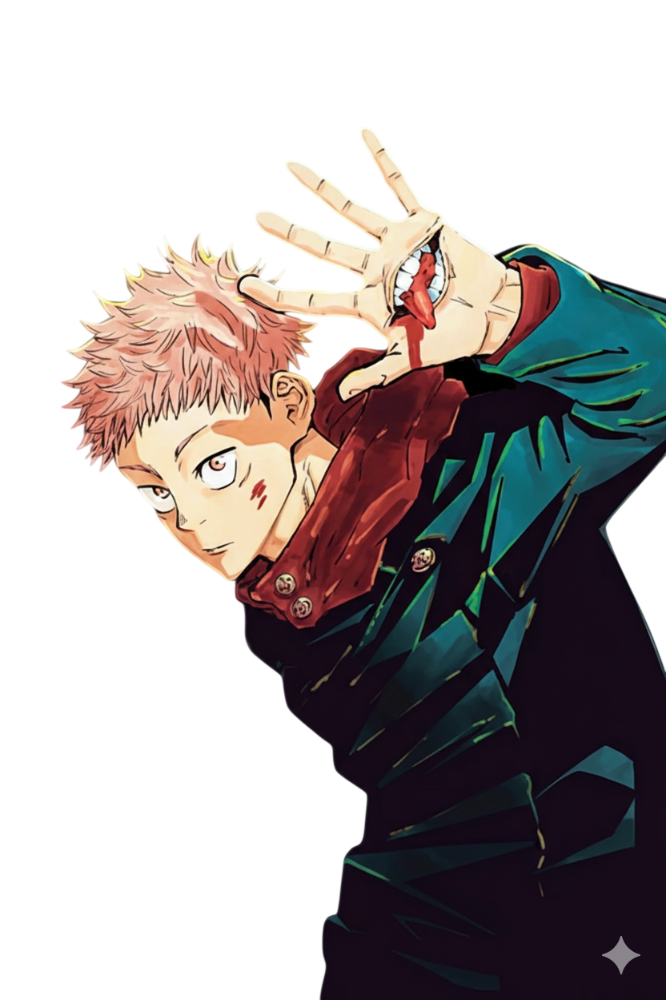

Como grande admirador do universo criado por Gege Akutami, desenvolvi este projeto para unir duas paixões: o desenvolvimento front-end e o anime Jujutsu Kaisen. Utilizando HTML, CSS e JavaScript, construí esta interface focada na experiência do usuário, celebrando momentos icônicos como o Incidente em Shibuya. Design e código por .
